Final accepted surfaces

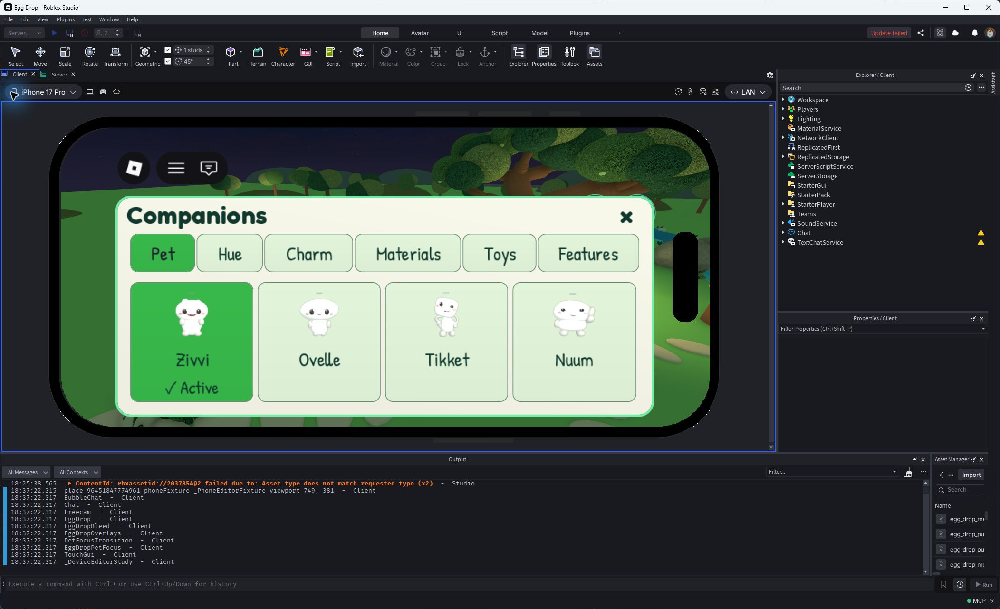
Largest, 749 × 381 Studio phone emulation. Seeded seven-owned collection: four first-row names and Active visible, then three. Square previews shrink within unchanged columns; this is not earned ownership.

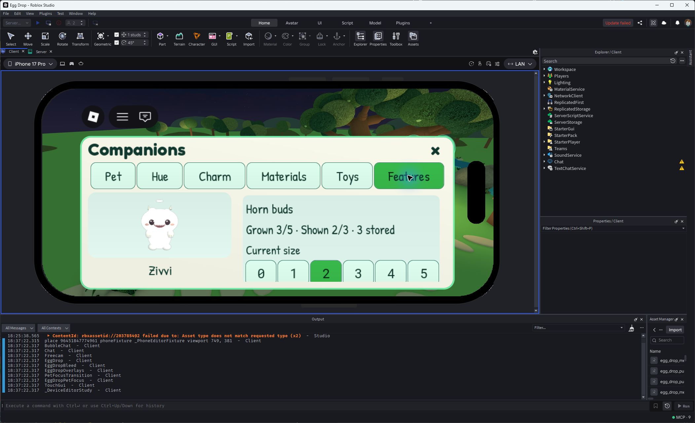
Seeded Features editor at Largest. Grown, Shown and stock are distinct. No natural 32-Star purchase or two-client propagation is implied.

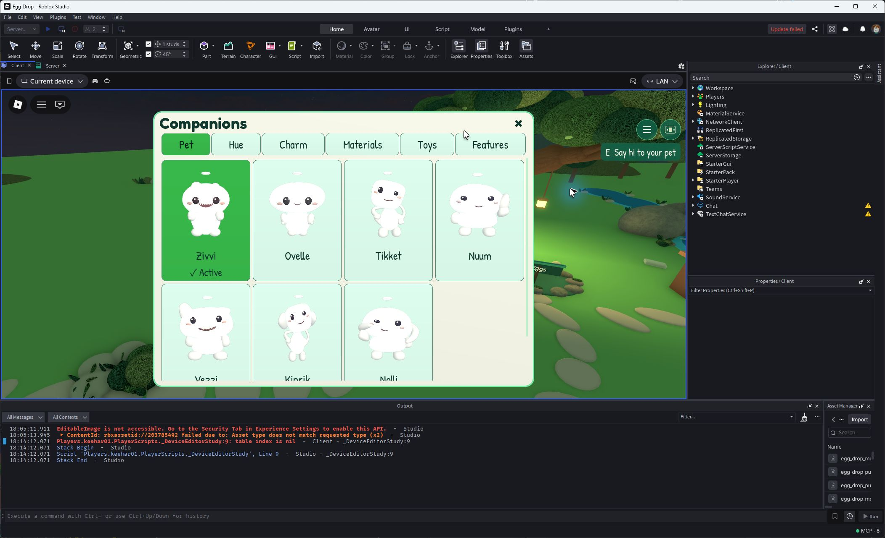
Seeded seven-owned desktop collection at Largest. Four plus three cards and six measured editor tabs.

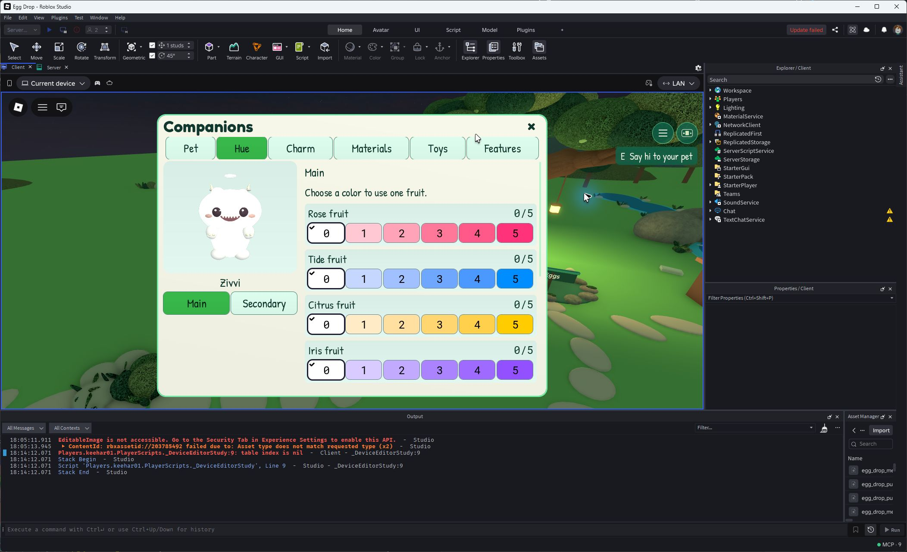
Seeded Hue inventory and dose controls at Largest. Fixed pet preview and an independently scrolling choice window.

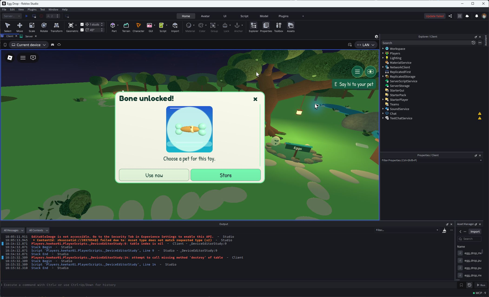
Accepted final Bone receipt: one header, a 200 px square stage and fixed Use now / Store. This seeded layout capture follows the smaller earlier earned receipt.

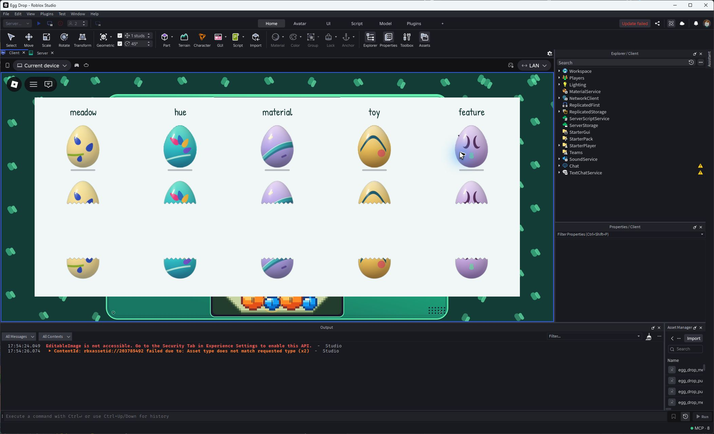
Native five-family whole/upper/lower image registration. Roblox served the uploaded 2048 px atlas at 1024 px; 192 px sprite rectangles are the verified coordinates.
Actual Studio controls

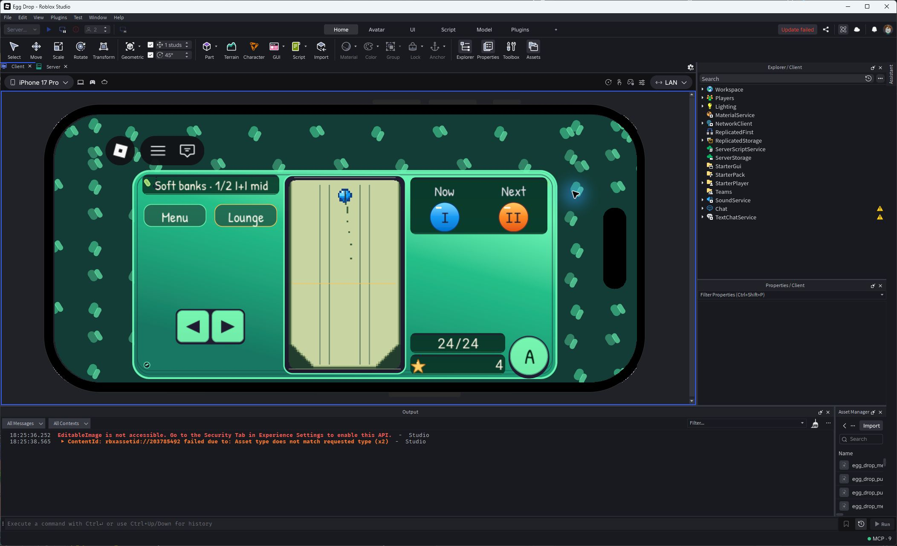
Largest Studio phone emulation: A touch and aim/Menu/hatch access. Physical-phone touch and performance remain untested.

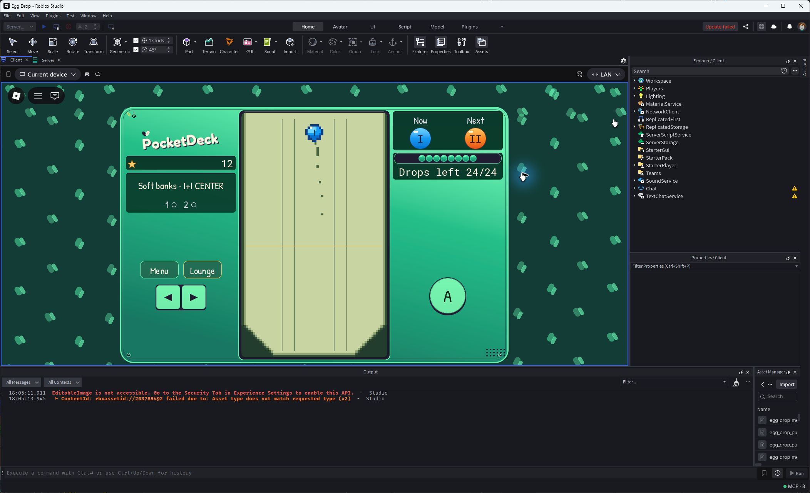
Actual 24-drop round → Hatch eggs → Close → Open deck. New serial, zero drops and empty field. The separate trace records 1,800 frames with no exposed old content.

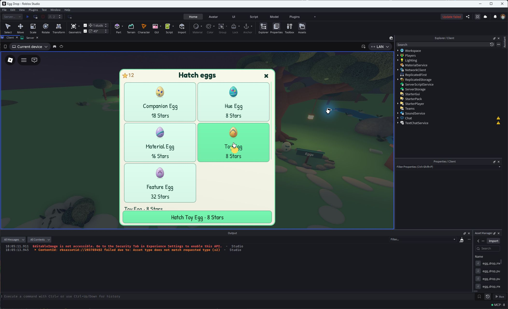
Actual Studio egg shop before spending 8 earned Stars. The permanent remaining-only toy pool is disclosed before purchase.
Feature and halo render studies

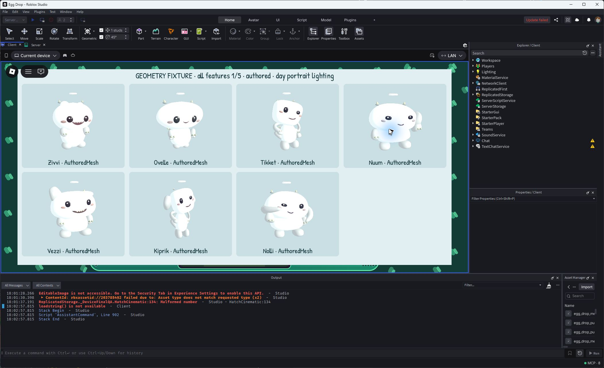
Original feature geometry on the authored rig lineup. Synthetic appearance, not earned feature stock.

Mid-stage horns, claws and folded wings on the same seven persistent identities.

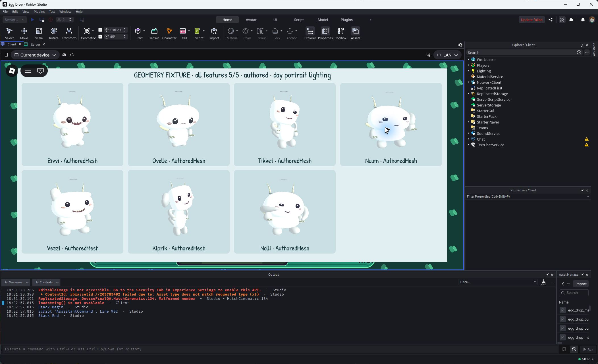
All three features at maximum size, with protected faces still readable.

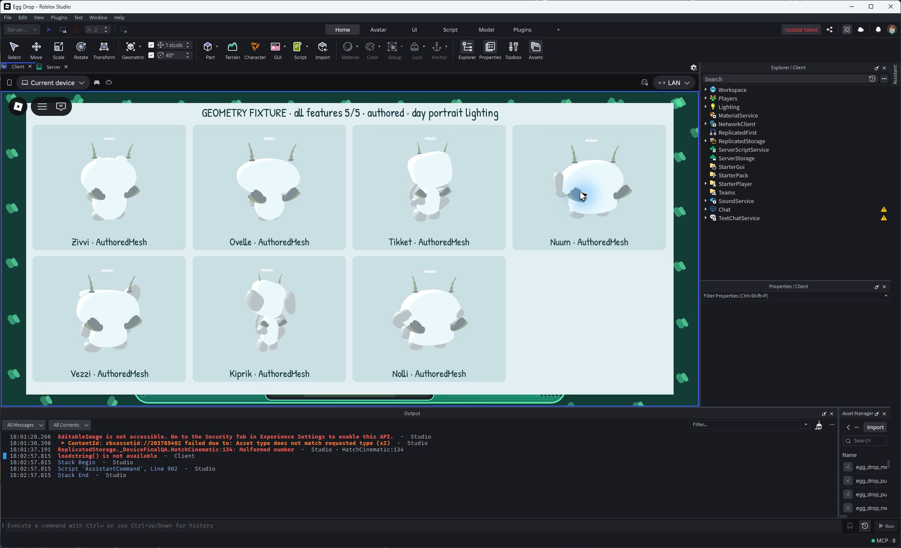
Rear placement and folded-wing silhouettes. No flight, stats or collision changes.

High-angle study shows the horizontal Ring opening and clearance above maximum features.

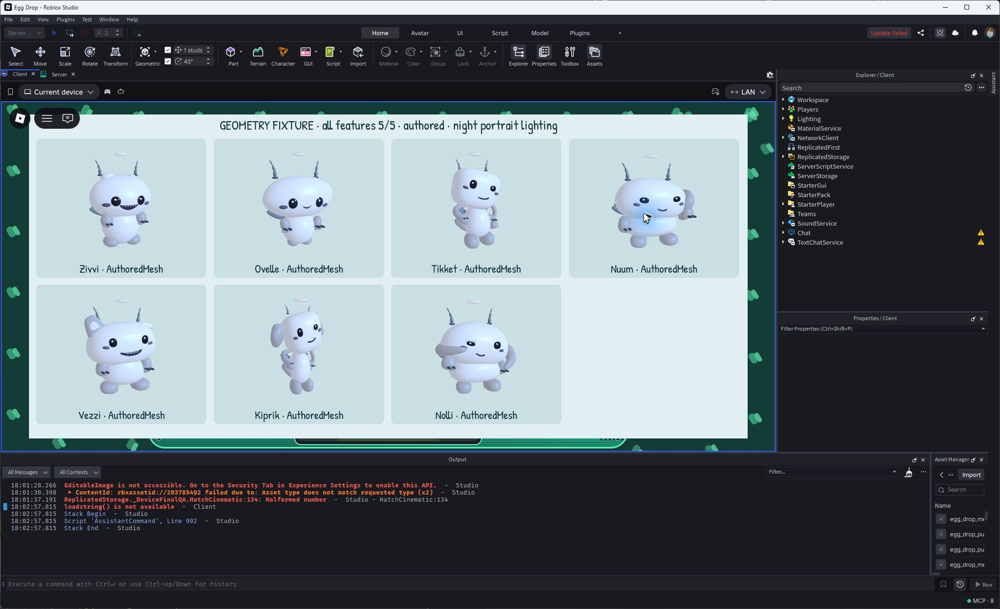
Maximum-feature night portrait fixture. Separate from ordinary garden observation and performance evidence.

Forced native rig backend with maximum features. This is not a physical-device or lowest-graphics test.
Retained pre-fix captures

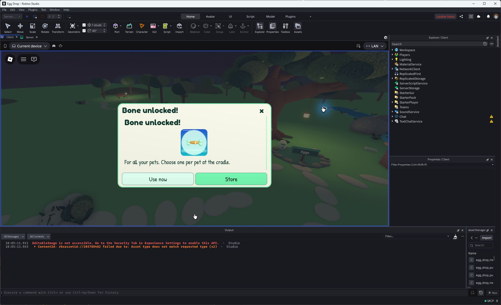
The ordinary earned Bone award was real. This earlier layout was rejected for a repeated title and a small hero; the accepted 200 px fixture above shows the correction.

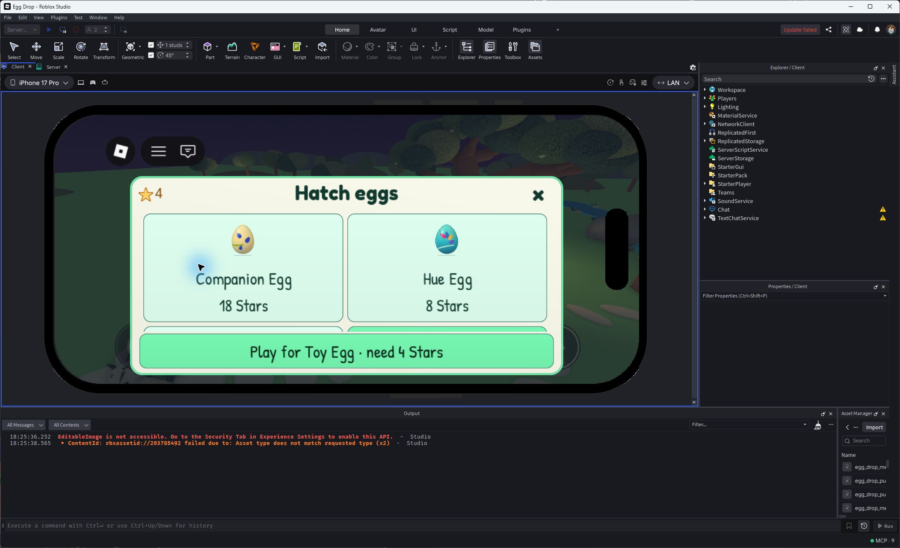
Actual phone-emulator reopening exposed the selected Toy card below the clip. The later seven-case native regression proves the repair; this is not a final fixed-phone capture.

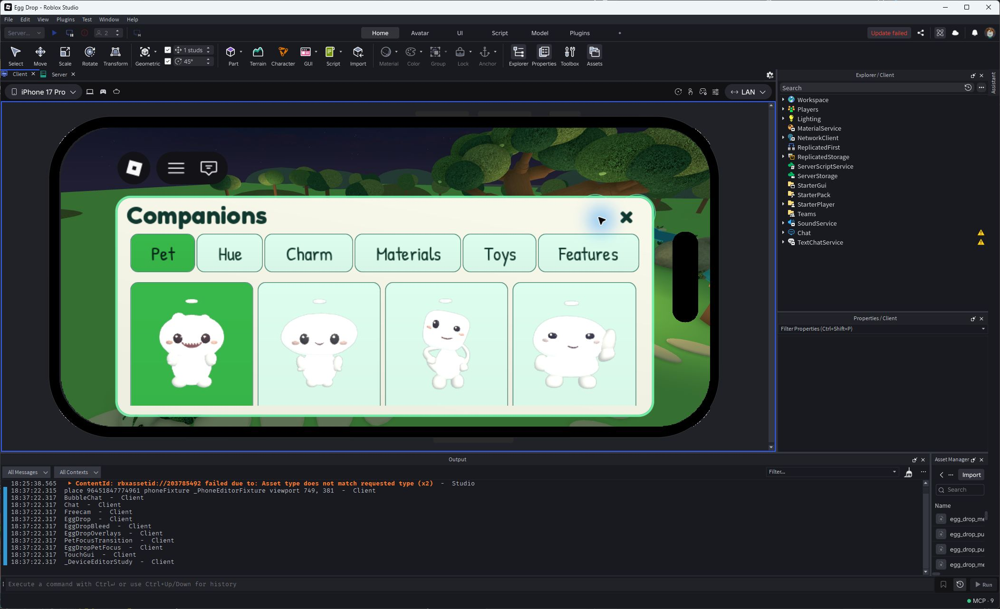
Faces were visible but the names/Active fell below the phone clip. The final first-row image above and one-case native test supersede this study.

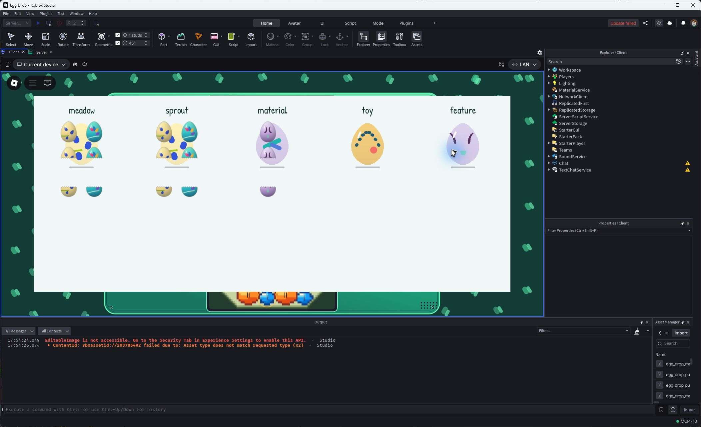
384 px rectangles were wrong for the 1024 px served atlas. The accepted 192 px registration above supersedes this capture.
Recorded checks
- 190 unique client cases / 21 suites: 182 / 19 frozen, 7 same-size shop reopen and 1 phone first-row. Consolidated coverage; overlapping reruns are not added.
- 126 backend cases / 11 suites; 47 affected garden cases / 5 suites, with 13 care-integration cases already included in the backend total.
- Actual earned Sparkler: three full episodes of 1.7996, 1.7997 and 1.8152 seconds; roughly 9.5–10 second start cadence. First observed episode was left-censored.
- Actual completed-field return: 1,800 sampled frames, zero exposed old frames. Actual earned Bone: 12 → 4 Stars and exact Use now selection.
- Current native source audit: 169 matched and compiled, zero errors. Source manifest is not publication proof.